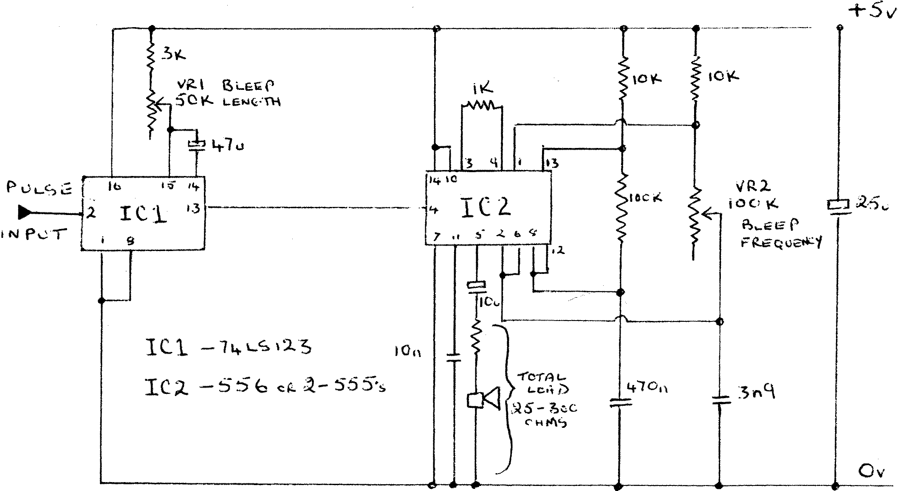

80-Bus News |
May–June 1983 · Volume 2 · Issue 3 |
| Page 22 of 59 |
|---|
After reading the review of the E.V. Bleeper in Vol 2, Iss 1, I realised that this could be a useful addition to my Nascom, however at £12+ I thought this was a bit pricey. So I decided to take the cheap way out and design my own, it turned out to be so succesful that I thought other readers may find it useful.
As I have not got an IVC I’m not sure what sort of signal is available to trigger the bleeper, but the circuit below is quite simple and could be easily. adapted to work from any input. The rising edge of a pulse will trigger the monostable IC1 and this will make the output go high for a period determined by the setting of VR1. Whilst the output of IC1 (and pin 4 of IC2) is high then IC2 will oscillate and produce a two tone warble from the speaker, the tone of the warble can be altered by VR2. The volume is controlled mainly by the type of speaker used. I found an old telephone insert with a DC resistance of 80 ohms which works well, but a conventional speaker can be used. I’ve got my bleeper hanging on bit 2 of Port 0 where it is activated by sending this bit high, this is simple in machine code or BASIC.
Whilst on the subject of hardware, many moons ago I built the graphics mod (INMC80 issue 5) and found that it worked very well but gave very small vertical gaps between continuous characters. On my Nascom 1 this was overcome by changing IC18 from 74LS123 to an ordinary 74123 and replacing R6 with a 10K ohm preset, this can then be adjusted so that it just removes the gap without the characters breaking up. It’s probably a bit naughty but its been working for a year with no trouble.
| Page 22 of 59 |
|---|